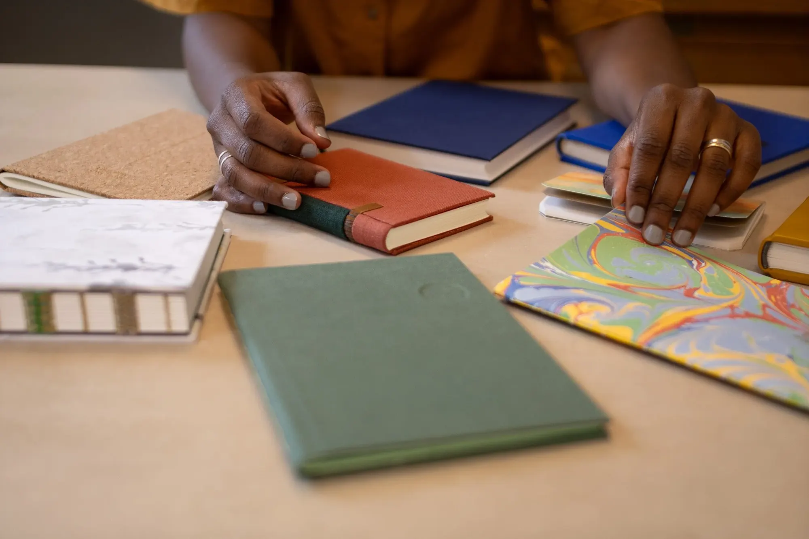
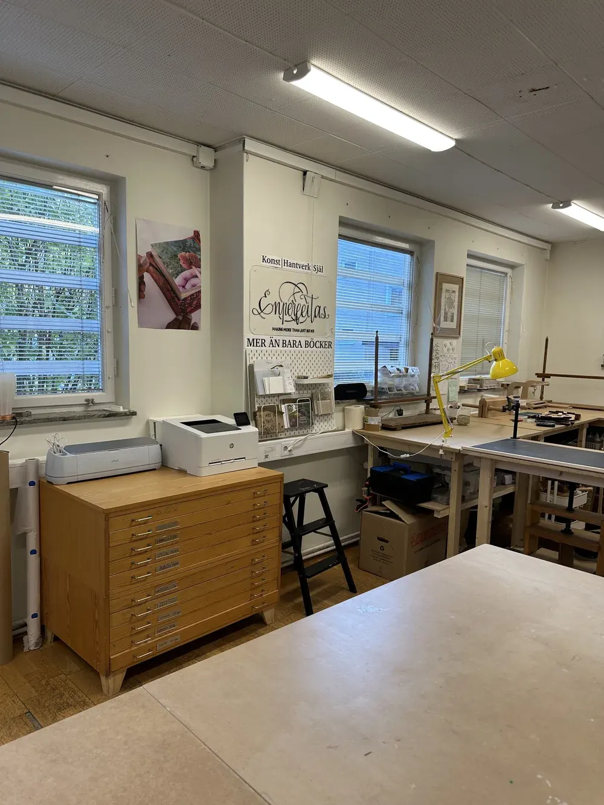
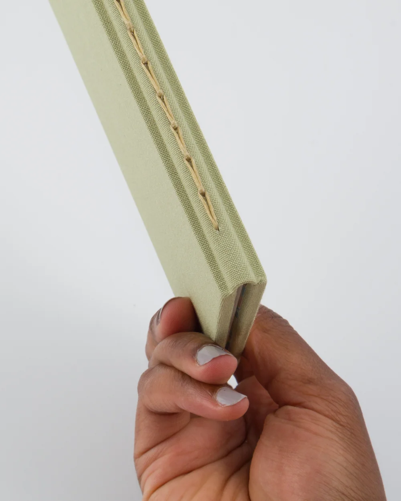
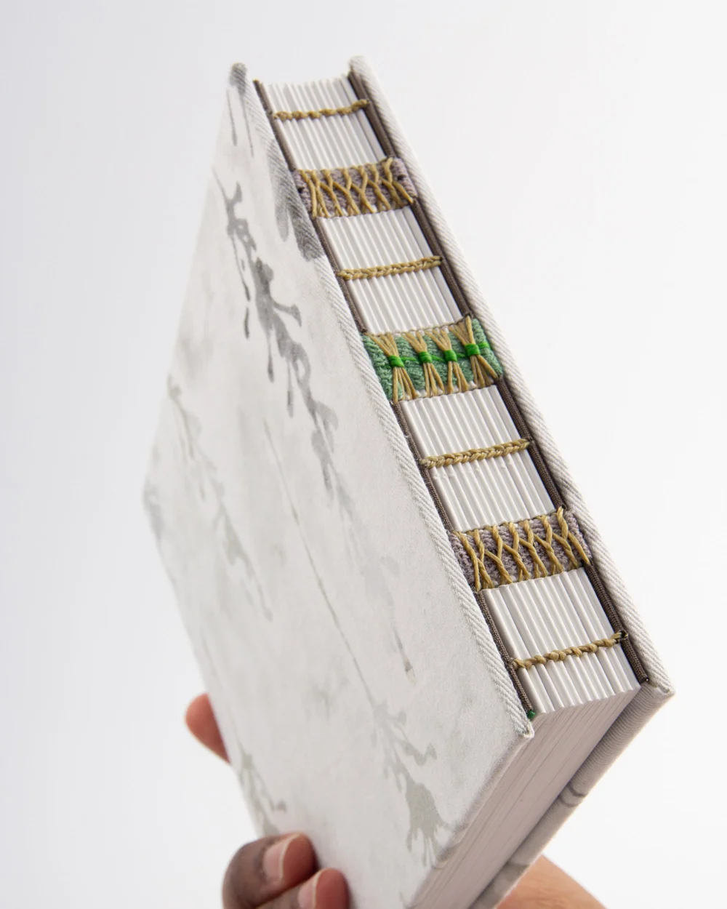
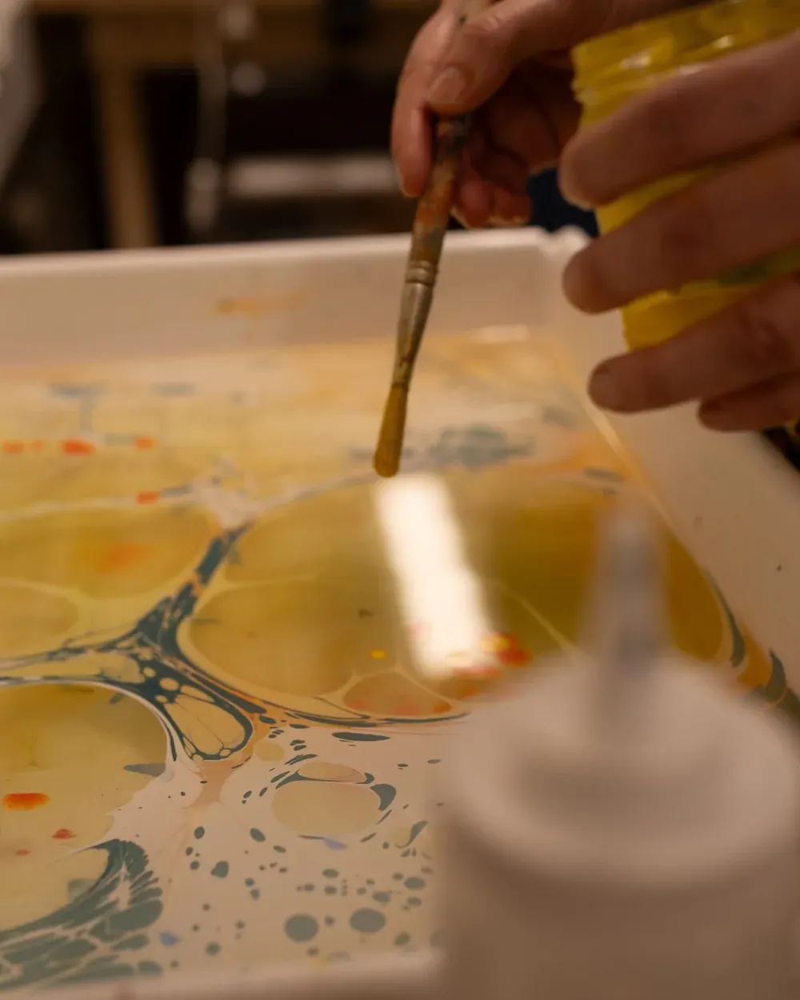
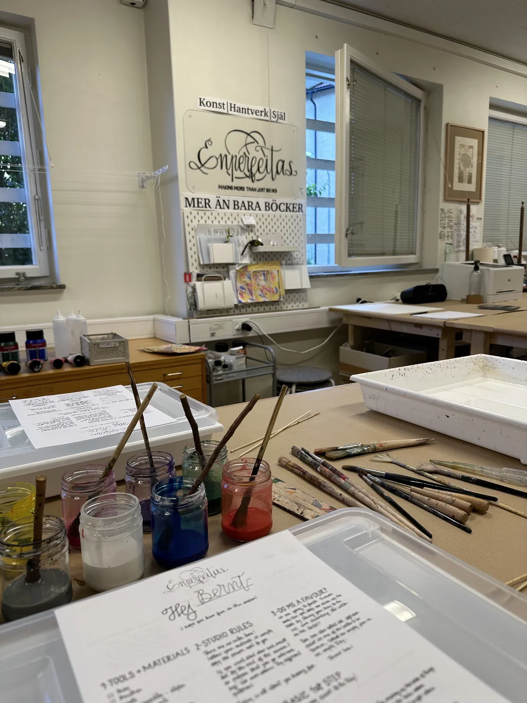
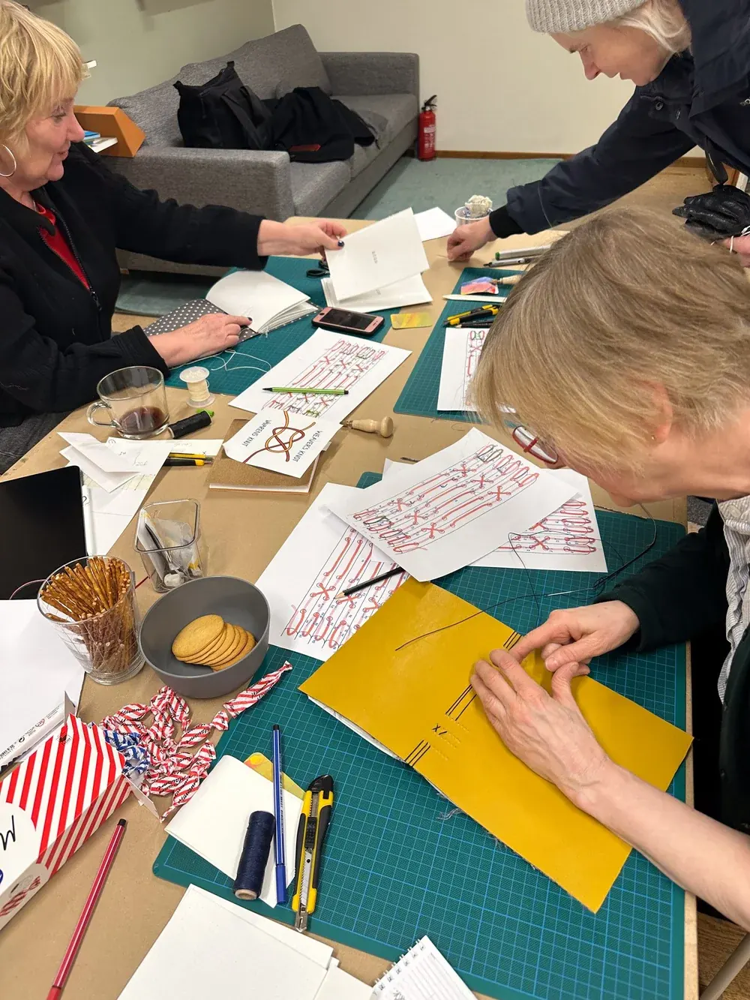

Learn with me for a day.
From personalized journals to marbling techniques and artist’s books, my workshops in Stockholm provide a hands-on, meditative space to learn, create, and connect. Perfect for beginners and experienced crafters alike, each session is designed to inspire and empower your creativity.
Each workshop is thoughtfully designed to reduce stress and celebrate the joy of creativity. Here, the focus isn’t on rushing but on embracing the process — learning at your pace, sharing ideas, and crafting something truly unique with your own hands.
Participants will have access to premium materials, traditional bookbinding tools, and a curated library of resources for inspiration in the studio.
Workshops are conducted in Swedish, English, or Portuguese, ensuring an inclusive and comfortable experience for all skill levels and backgrounds.
The studio is located in Stockholm, Sweden, with an address in Gudmundrågatan 10, Vällingby — Råcksta. It takes about 8 min to walk from Råcksta metro station.
If you are looking for a one-time session for a group of friends or a team, there are more dates available to book, so please contact me for more details at info@enperfeitas.com.

The interior of the bookbinding studio
Hands folding paper for a concertina and single-section bookIn this workshop, I will teach you how to make a Concertina and a Single Section binding this time. Both are great beginner techniques to learn and are great to be used as sketchbooks, mini albums or journals. Together, we will be indulging in a focused, hands-on creation to remember. At the end of this workshop, you will have your own handmade books, skills and knowledge to make your own books at home.
A full refund is possible if the course is cancelled up to 4 weeks before the starting date. After that, a refund of 50% is possible, or rebooking to a later workshop — if available. In the case of cancellation within less than 14 days before the start of the course, unfortunately, a refund isn't possible anymore and the reservation will be lost.
I reserve the right to cancel the workshop in case of illness or too few participants. In that case, the full amount will then be refunded.
This time I will be teaching you how to make a Bradel binding. This is a twist on the classic Perfect Spine book, where the spine is curved for a more distinct look. I have to confess that this one is my favourite. At the end of this workshop, you will have your handmade books, skills and knowledge to make your books at home.
A full refund is possible if the course is cancelled up to 4 weeks before the starting date. After that, a refund of 50% is possible, or rebooking to a later workshop — if available. In the case of cancellation within less than 14 days before the start of the course, unfortunately, a refund isn't possible anymore and the reservation will be lost.
I reserve the right to cancel the workshop in case of illness or too few participants. In that case, the full amount will then be refunded.

A finished exposed-spine binding showing the sewn spine and bandsThis time, I will be teaching you how to make an Exposed binding. This is one of my follower’s favourites. Where the beauty of the sewn spine gets to shine with the help of bands and cords. Here I will show you how to achieve a gorgeous look without having to use a sewing frame.
A full refund is possible if the course is cancelled up to 4 weeks before the starting date. After that, a refund of 50% is possible, or rebooking to a later workshop — if available. In the case of cancellation within less than 14 days before the start of the course, unfortunately, a refund isn't possible anymore and the reservation will be lost.
I reserve the right to cancel the workshop in case of illness or too few participants. In that case, the full amount will then be refunded.

A hand marbling paper with orange, yellow, and blue inks in a shallow bathIndulge in a unique blend of creativity and relaxation with our Marble and Sip workshop in Vällingby. This hands-on event lets you unwind and create in a sophisticated setting, whether you’re celebrating a special occasion or simply treating yourself to a memorable night out.
A full refund is possible if the course is cancelled up to 4 weeks before the starting date. After that, a refund of 50% is possible, or rebooking to a later workshop — if available. In the case of cancellation within less than 14 days before the start of the course, unfortunately, a refund isn't possible anymore and the reservation will be lost.
I reserve the right to cancel the workshop in case of illness or too few participants. In that case, the full amount will then be refunded.
Want a more intimate and exclusive experience? Book a private Marble & Sip session tailored just for you! Enjoy full creative freedom, schedule flexibility, and an enhanced experience for up to 10 people. Private sessions come with an additional fee to cover exclusive studio use, customized planning, and personal guidance. Get in touch to craft your perfect creative event: info@enperfeitas.com

Marbling inks and brushes laid out ready to use in the studioA Creative Session for Experienced Marblers. Already familiar with the magic of marbling and want to dive straight into creating? This session is designed for those who have marbled before and want access to a fully prepared studio space, hands-on creating.
A full refund is possible if the course is cancelled up to 4 weeks before the starting date. After that, a refund of 50% is possible, or rebooking to a later workshop — if available. In the case of cancellation within less than 14 days before the start of the course, unfortunately, a refund isn't possible anymore and the reservation will be lost.
I reserve the right to cancel the workshop in case of illness or too few participants. In that case, the full amount will then be refunded.
Already have some experience with bookbinding and just need a personal bookbinding oasis when you have access to tools and just create? No rush, no pressure. Have a look at the memberships the studio has to offer to you.
Become a member
A group working on a crafting project together at a tableStrengthen your team’s bond while exploring the creative art of bookbinding. These tailored sessions offer a collaborative, stress-free environment where your team can learn, create, and connect.
Whether your group consists of beginners or has a mix of crafting skills, our workshops are designed to cater to all levels. Together, you’ll enjoy the journey of crafting something beautiful while celebrating each team member’s unique contribution.
The final cost is adjusted according to the number of participants and travel costs to your working space.
During the session, participants will learn foundational bookbinding techniques, including:
By the end of the workshop, your team will walk away with more than handcrafted books — they’ll gain a shared sense of accomplishment, stronger interpersonal connections, and memories of a unique creative experience.
Ready to book a session for your team? Fill out some info and we will be in touch shortly. I am looking forward to crafting stories together!
Request a quote